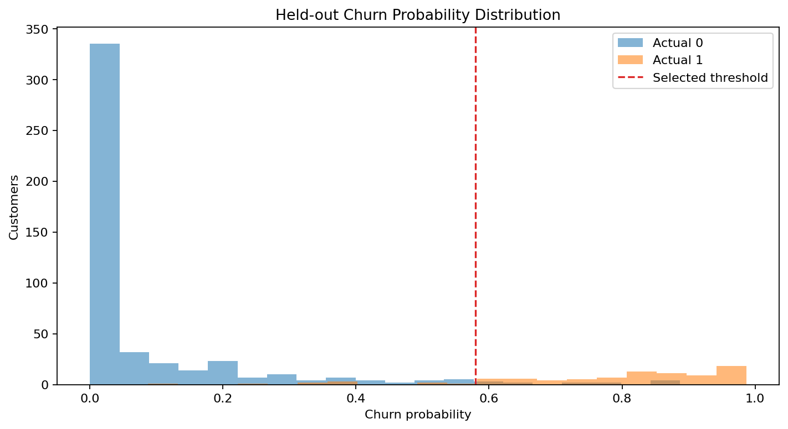
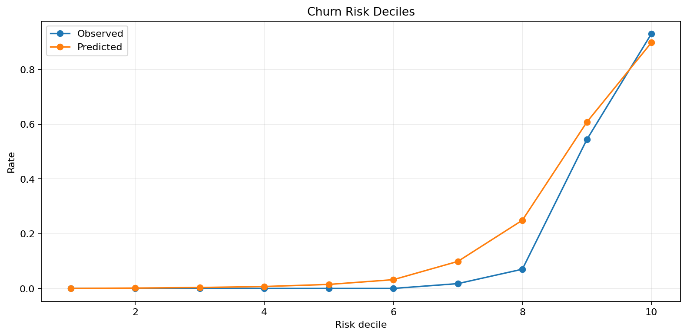
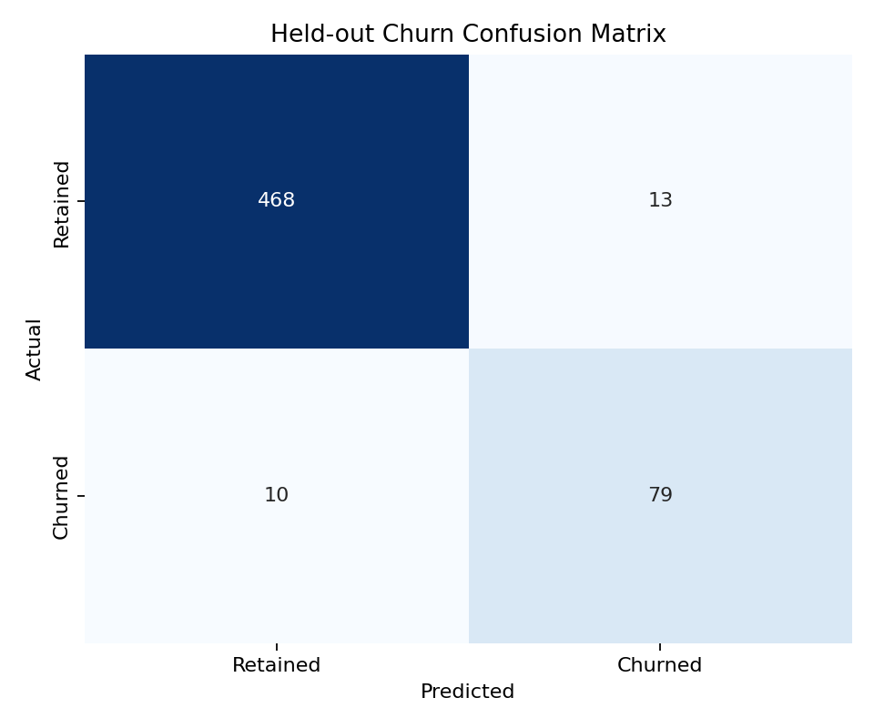
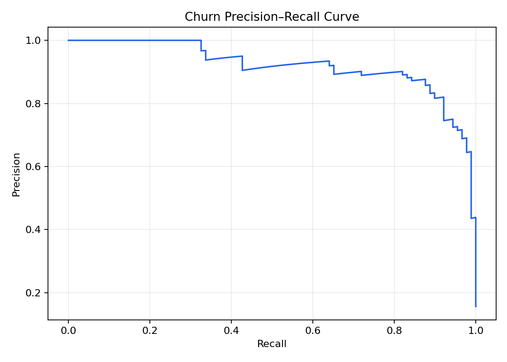

Telecom Churn Classification
Author: Mohammed Adeen Shaik
Review date: 11 October 2026
Research question
Can a baseline model rank churn risk while meeting a validation recall requirement?
Data and provenance
UCI Iranian Churn dataset.
Source materials are linked from the repository README. Input fingerprints are recorded in the evidence manifest so a reader can identify the exact committed artifacts used in this review.
Method and analytical rationale
Duplicate rows are removed. Stratified training, validation and test partitions separate learning from model selection. Preprocessing is fitted within pipelines. Validation average precision selects the model and a recall constraint selects its threshold.
Findings and interpretation
Fresh execution on 11 October 2026 using the committed pipeline and seed 42. Validation selected random_forest. On 570 held-out records, precision was 85.9%, recall 88.8% and average precision 0.9198. The test set contained 10 missed positives and 13 false alerts. These are retrospective sample results.
| Measure | Value |
|---|---|
| average precision | 0.9198 |
| roc auc | 0.9848 |
| precision | 0.8587 |
| recall | 0.8876 |
| f1 | 0.8729 |
| true negatives | 468 |
| false positives | 13 |
| false negatives | 10 |
| true positives | 79 |
| selected model | random_forest |
| decision threshold | 0.5795 |
| validation precision at threshold | 0.8375 |
| validation recall at threshold | 0.7528 |
| validation average precision | 0.8589 |
| churn prevalence | 0.1565 |
| train rows | 1710 |
| validation rows | 570 |
| test rows | 570 |
| random seed | 42 |
Limitations
A validation recall constraint does not guarantee test or future recall. Random partitions do not demonstrate future-period generalization. Retention effectiveness requires an intervention study.
Reproduction
Use the setup commands and input contract in the repository README. Open the notebook catalogue for annotated code and saved outputs. Keep raw records and model binaries local; public reports contain aggregate results or source-embedded figures.
Final visual results

Figure from key_visuals.ipynb, original code cell 6.

Figure from key_visuals.ipynb, original code cell 8.

Held-out evaluation figure: confusion_matrix.png.

Held-out evaluation figure: precision_recall_curve.png.